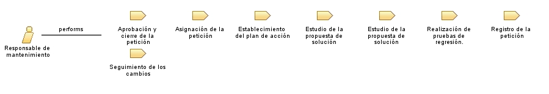

Role: Responsable de mantenimiento
Persona encargada del mantenimiento del software.
Role Sets:
Trabajadores
Relationships

Primary Performs
Aprobación y cierre de la petición
Asignación de la petición
Establecimiento del plan de acción
Estudio de la propuesta de solución (Mantenimiento Correctivo)
Estudio de la propuesta de solución (Mantenimiento Evolutivo)
Realización de pruebas de regresión.
Registro de la petición
Seguimiento de los cambios
Modifies
Catálogo de Peticiones
Catálogo de peticiones (MSI 1.2)
Catálogo de peticiones (MSI 2.2)
Catálogo de peticiones (MSI 3.2)
Catálogo de peticiones (MSI 4.3)
Evaluación del cambio
Evaluación del Resultado de las Pruebas de Regresión
Plan de acción para la modificación
Propuesta de Solución (MSI 2.2)
Resultado de las Pruebas de Regresión
Main Description
El encargado de mantenimiento se ocupa de planear, supervisar y asegurar el proceso de mantenimiento del producto.